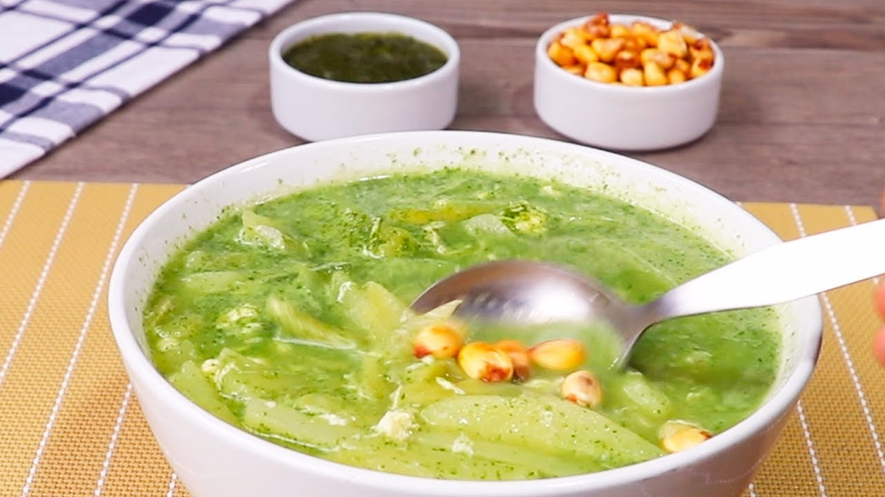

Sopa verde

Sopa peculiar por su color verde originaria de portugal
la receta tradicional aconsejaba que se sirviera en los días festivos con unos trocitos de chouriço (tora) en el caldo. Hoy en día es muy común encontrarse unas rodajitas en el plato o cuenco donde se toma el caldo.
Ingredientes
- Espinaca
- Parte blanca de un puerro
- Caldo
- Perejil
- Sal, pimienta y jengibre.
- Huevo
- pan
- Nuez moscada
Pasos para hacer Flatbrød
- limpias y enjuagas unos 300 g de espinacas frescas o descongeladas.
- Enjuagas 10 cm de la parte blanca de un puerro y lo cortas en rodajas finas.
- Llevas un litro de caldo a ebullición y añades las espinacas y el puerro.
- Dejas hervir durante 5 minutos y añades media taza de perejil finamente picado y hierves unos minutos más,tambien agregas sal, pimienta y jengibre.
- Batir dos o tres yemas de huevo con media taza de nata en el fondo de una sopera
- Viertes la sopa mientras se bate enérgicamente. Rallas un poco de nuez moscada sobre la sopa y sirves con un buen pan
Regresar a la pagina principal